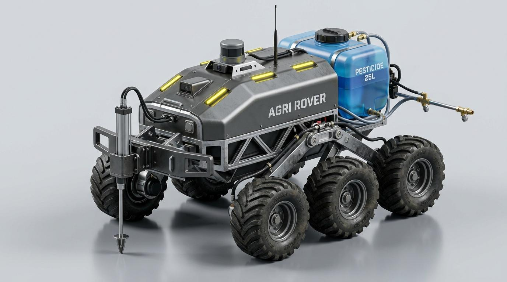
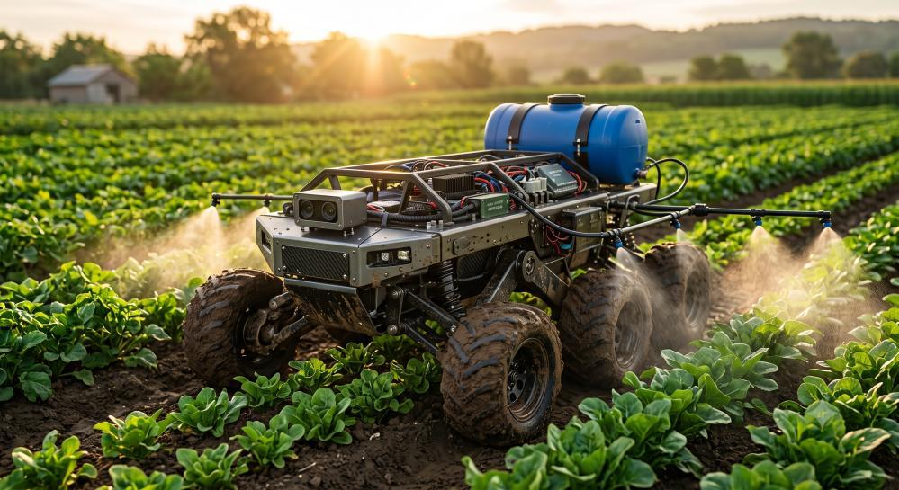

AGRI ROVER
Autonomous IoT Agricultural Vehicle for Precision Crop Care & Soil Health Monitoring
Department of Master of Computer Applications (MCA) • BMS Institute of Technology & Management (VTU Affiliated)
Program: Master of Computer Applications (MCA)
Core Subsystems: Embedded IoT Firmware, Dual BTS7960 Motor Kinematics, Power Subsystem, and Motorized Soil Prober Interlock.
Program: Master of Computer Applications (MCA)
Core Subsystems: OpenCV Edge Threat Segmentation, Real-Time WebSocket Telemetry, and Three.js 3D WebGL Digital Twin Simulator.
Agricultural Crises & UN SDG Mapping
Bridging the critical gap between hazardous chemical spraying and sustainable soil stewardship
• Social: Eradicates toxic operator chemical inhalation via autonomous navigation.
• Governance: Open-source, reproducible architecture with failsafe under-voltage cutoffs (≤12V).
Unified Hardware & Software Stack
End-to-end integration between physical actuation, edge perception, and digital twin telemetry
Agri Rover Blueprint & Working Mechanism
Clear modular breakdown of physical subsystems (without solar panels) and 4-stage operational execution

How Agri Rover Outperforms Existing Solutions
Disruptive cost efficiency, zero chemical wastage, and unprecedented accessibility for small-to-medium farmers
| Evaluation Criteria | Tractor Boom Sprayer | Agricultural Drone (UAV) | Agri Rover (Our Solution) |
|---|---|---|---|
| Capital Investment / Cost | ₹20,00,000 – ₹50,00,000+ | ₹6,00,000 – ₹15,00,000+ | ₹35,000 – ₹45,000 (~$450) Built with accessible industrial components |
| Chemical Wastage | High Wastage (70–80% wasted on soil/healthy plants) | Moderate Wastage (40–50% drift losses) | Minimal Wastage (Up to 80% saved) 200ms directional solenoid micro-bursts |
| Integrated Soil Testing | None (Requires physical lab tests: 3–7 days) | None (Aerial sensors cannot measure NPK) | In-Situ Ground Probing (<5 seconds) Motorized NPK, pH & moisture data logging |
| Navigation & Canopy Access | Damages tall crops; high soil compaction | Top-canopy only; cannot reach under-leaf pests | Row-Level Skid-Steer Navigation (R=0) Direct side-canopy & under-leaf nozzle access |
| Virtual Validation / Twin | No virtual testing; physical damage risks | Expensive test flights; crash liability | 3D WebGL Digital Twin Simulation Zero-risk, zero-cost pre-deployment testing |
What External Judges Look For & How We Deliver
Demonstrating engineering rigor, safety fail-safes, real-world feasibility, and research contributions

• Real-time WebSockets stream wheel speeds, tank level, battery voltage, and soil logs to browser in real-time (<100ms).
• Drive-Probe Interlock: Traction motors locked at 0% PWM during linear actuator ground penetration to prevent mechanical shear.
• Open reproducible architecture (Python, OpenCV, WebGL) with zero proprietary software licensing fees.
• Enables safe virtual validation before field deployment, eliminating physical collision and crash risks.
Project Phase 2 Roadmap & Key Achievements
Summary of milestones achieved, upcoming technological expansions, and open defense session
Live Demonstration Ready: Hardware Chassis Prototype & Interactive 3D WebGL Digital Twin Dashboard